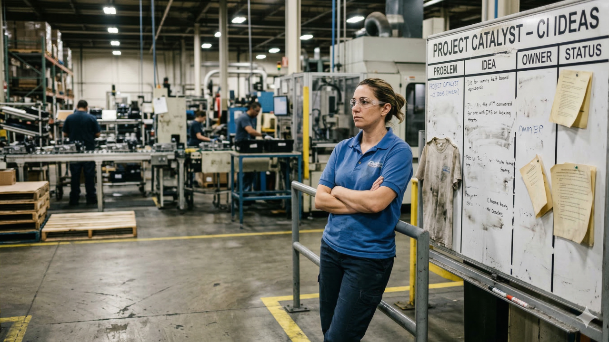

"Flavor of the Month" Fatigue: How to Revive a Failed Lean Initiative
March 16, 2026
Meet Maria. She’s been a shift supervisor on your production floor for six years. Right now, she’s staring at a dusty "Continuous Improvement Board" hanging on a pillar near the assembly line.
Last January, the executive team launched this board with massive fanfare. They called it Project Catalyst. There were mandatory training sessions, free t-shirts, and promises that "this is the new way we do business." Maria bought in. She spent hours coaching her team to fill out the improvement cards.
But by March, the Plant Manager stopped asking about the board. By May, the engineering team stopped closing out the tickets Maria’s team submitted. Now, it’s just a whiteboard covered in smeared dry-erase marker and ignored ideas.
This morning, Maria heard a rumor: Leadership just hired a new consultant, and next week, they are launching Lean 2.0.
Maria doesn't feel inspired. She feels exhausted. She rolls her eyes and tells her lead operator, "Just nod and smile. It’s the new flavor of the month. If we ignore it long enough, it’ll go away just like the last one."
The High Cost of Initiative Fatigue
If your company has tried to implement Lean, failed, and is now trying to start again, you are fighting a massive uphill battle. You are no longer just fighting the natural resistance to change; you are fighting initiative fatigue.
When leadership launches a massive push but fails to sustain the follow-up, it destroys trust. The workforce learns that executives lack the discipline to stick with their own ideas. They realize that "Lean" isn't a fundamental shift in company culture. It’s just a temporary side project that distracts them from getting real work done.
So, how do you revive a Lean initiative when your workforce is already cynical and checked out? You have to do the hardest thing for a leadership team to do: eat crow and change your own behavior.
4 Steps to Restarting Lean (and Making it Stick)
If you want to move past the "flavor of the month" and build lasting change, here is how you reboot your Lean transformation:
- Stand Up and Own the Failure: Do not launch Lean 2.0 pretending that Project Catalyst never happened. You must address the elephant in the room. Leadership needs to stand in front of the Marias of your organization and say: "We asked you to do the work last time, but as leaders, we failed to support you, and we failed to follow up. We own that. Here is how we, as a management team, are changing our behavior this time." Transparency rebuilds trust.
- Stop "Launching" and Start "Sustaining": The ROI of a Lean transformation doesn't come from the kickoff event. It comes from the 100th consecutive day of boring, unglamorous follow-up. Shift your executive focus away from grand unveilings and toward daily discipline. If you put a huddle board on the floor, a leader better be standing in front of it every single shift, asking what the team needs.
- Fix What Bugs Them First: If you want to win back a cynical workforce, don't start your new initiative by asking them to speed up cycle times to improve the company's bottom line. Start by asking: "What is the most frustrating, stupid part of your job right now?" Find the broken pallet jack, the missing tools, or the terrible software interface. And fix it immediately. Prove that Lean works for them before you ask it to work for the P&L.
- Embrace Manufacturing Simplicity: Initiatives often fail because they are too complex. Leaders roll out 5S, Kanban, Value Stream Mapping, and TPM all at once. The floor drowns in jargon. Strip it down. Focus on one simple metric or one basic routine until it becomes muscle memory. Complexity breeds fatigue; simplicity breeds execution.
The Bottom Line
Your frontline operators and supervisors aren't inherently opposed to continuous improvement. They just want to know that if they put in the effort to change, leadership has the discipline to stay the course.
Stop serving "flavors of the month." Pick one simple recipe, and stick to it until it works.
The Call to Action
Have you ever survived a 'flavor of the month' rollout? What is the one thing leadership could have done differently to actually make it stick? Share your battle stories in the comments below. And if you are looking for a practical framework that actually lasts, keep an eye out for my upcoming book, Manufacturing Simplicity.
#LeanTransformation #OperationalExcellence #ContinuousImprovement #Leadership #ManufacturingLeadership #ChangeManagement #LeanLeadership #OrganizationalCulture #ManufacturingSimplicity